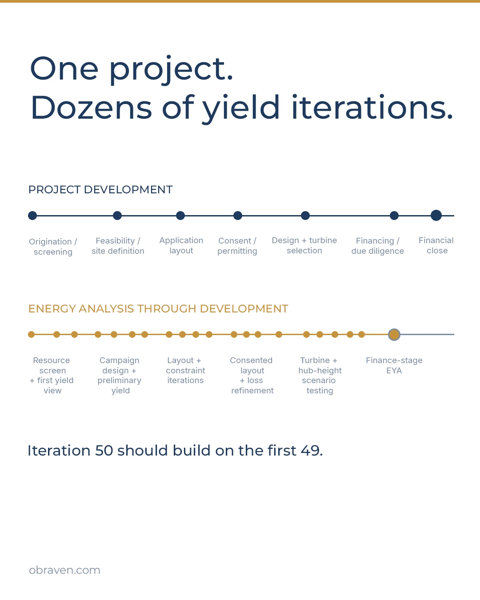

Technical thinking from OBRAVEN
Practical notes on wind measurement, resource, energy yield, uncertainty, and the project questions around them. Most began as LinkedIn posts or articles. Each is kept here in full, as published, with the idea in brief, where it applies, and questions for a project meeting.

The finance-stage EYA may be iteration 50
Most wind projects go through dozens of energy yield iterations before financing. The formal assessment should build on that history.
16 July 2026Read- Methods and continuity
The handover should preserve more than the final number
Model files show what was run. They do not always show why. Reproducible analysis is a commercial asset when a project is sold, financed, or reviewed.
13 August 2026 - Measurement
Design the campaign. The kit follows.
A good wind measurement campaign is designed backwards from what the project will need from it. Then the equipment list starts to make sense.
June–September 2026 - Measurement
Measurement-efficient, not measurement-free
Model-only bankability in wind is an attractive idea. For lender reliance today, the practical direction is narrower: measured data where it matters.
2 July 2026
More from Insights
- Measurement
Nearby is not the same as representative
“There is wind data nearby” is a useful start. Whether it represents your turbines and your hub height is a different question.
9 July 2026 - Energy yield
Faster tools expand the search space
Running more layouts, turbines, and constraint cases has got much easier. Knowing what the spread across them means has not.
1 October 2026 - Energy yield
A layout change can save cost and still lose value
Wind project value often sits between disciplines. A turbine move that helps civil design may quietly cost generation.
25 June 2026 - Energy yield
Same 95% availability. Very different years.
A single long-term availability assumption is usually right for the energy estimate. In a year-by-year financial model, the timing can matter.
20 August 2026
New thinking is published first on Stan’s LinkedIn (opens in a new tab).
Bring one live project question.
Send the project stage and the question ahead, the analysis and data already available, any deadline or project gate, and who will rely on the output.
- Whether OBRAVEN is the right choice
- The narrowest useful scope
- Output, timing, and fee basis
- Reliance and specialist boundaries
A short scoping call should end with a defined next step – or a clear conclusion that further work is not warranted.